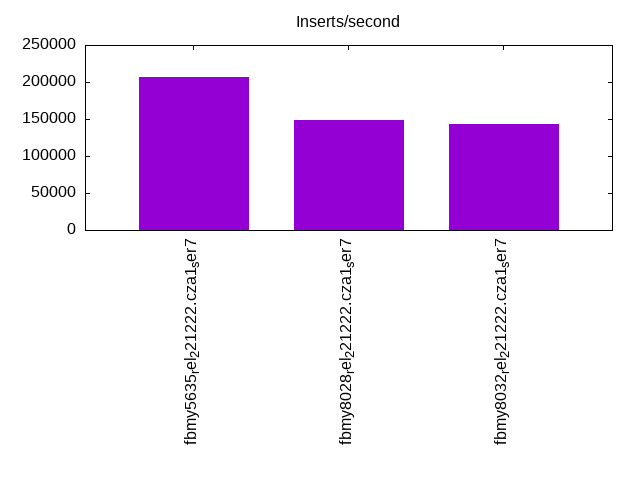
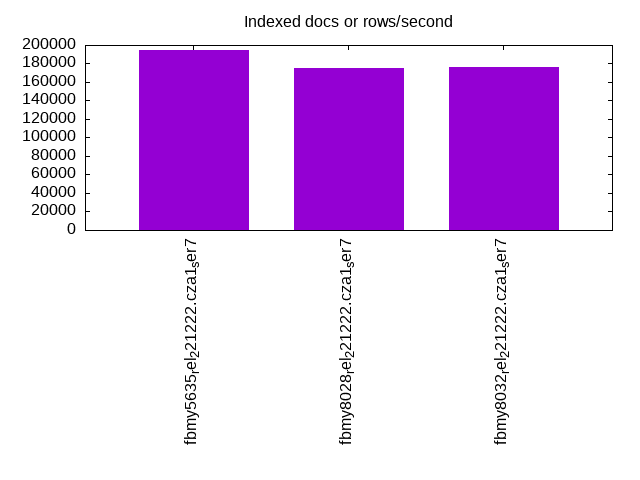
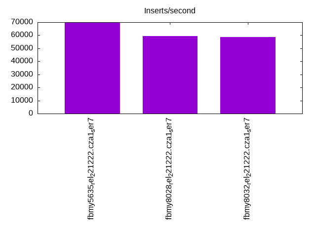
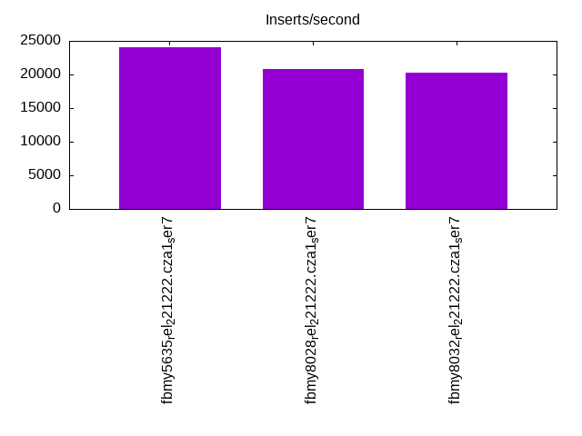
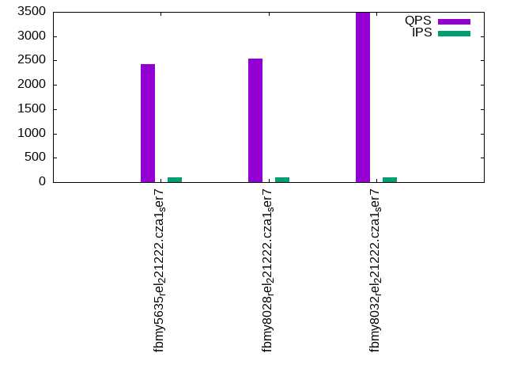
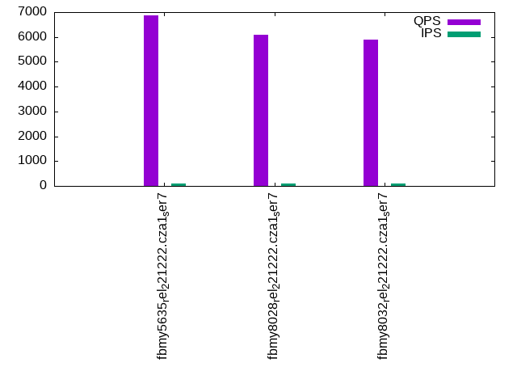
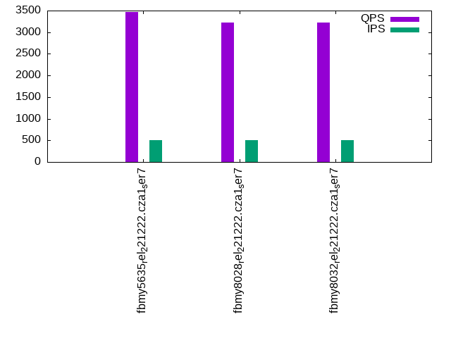
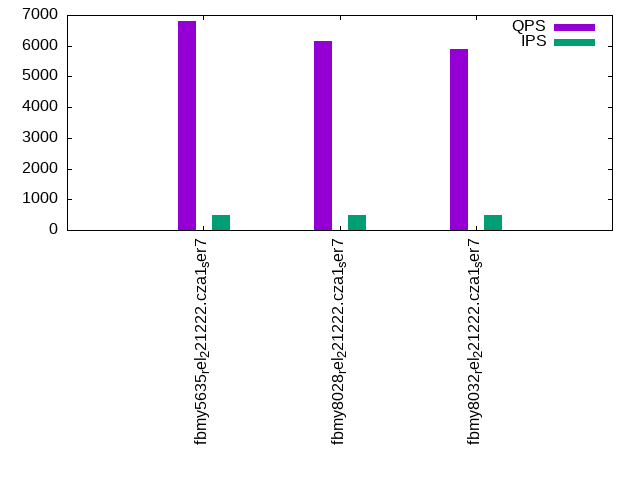
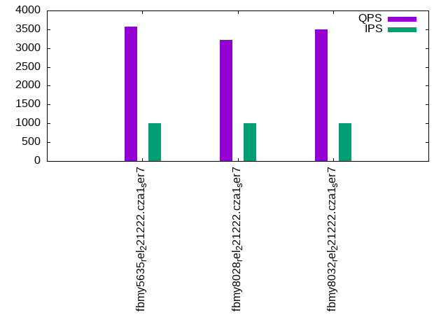
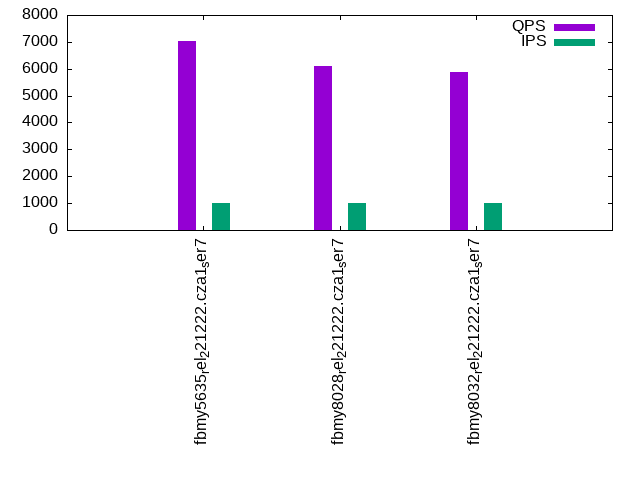

This is a report for the insert benchmark with 60M docs and 1 client(s). It is generated by scripts (bash, awk, sed) and Tufte might not be impressed. An overview of the insert benchmark is here and a short update is here. Below, by DBMS, I mean DBMS+version.config. An example is my8020.c10b40 where my means MySQL, 8020 is version 8.0.20 and c10b40 is the name for the configuration file.
The test server has a Beelink SER7 with 8 AMD cores, 32G RAM and an NVMe SSD. It is described here. The benchmark was run with 1 client and there were 1 or 3 connections per client (1 for queries or inserts without rate limits, 1+1 for rate limited inserts+deletes). It uses 1 table. It loads 60M rows per table without secondary indexes, creates 3 secondary indexes per table, then inserts 50m+50m rows per table with a delete per insert to avoid growing the table. It then does 6 read+write tests for 1800s each that do queries as fast as possible with 100,100,500,500,1000,1000 inserts/s and the same for deletes/s per client concurrent with the queries. The database is cached in memory. Clients and the DBMS share one server. The per-database configs are in the per-database subdirectories here.
The tested DBMS are:
The numbers are inserts/s for l.i0, l.i1 and l.i2, indexed docs (or rows) /s for l.x and queries/s for qr100, qp100 thru qr1000, qp1000" The values are the average rate over the entire test for inserts (IPS) and queries (QPS). The range of values for IPS and QPS is split into 3 parts: bottom 25%, middle 50%, top 25%. Values in the bottom 25% have a red background, values in the top 25% have a green background and values in the middle have no color. A gray background is used for values that can be ignored because the DBMS did not sustain the target insert rate. Red backgrounds are not used when the minimum value is within 80% of the max value.
| dbms | l.i0 | l.x | l.i1 | l.i2 | qr100 | qp100 | qr500 | qp500 | qr1000 | qp1000 |
|---|---|---|---|---|---|---|---|---|---|---|
| fbmy5635_rel_221222.cza1_ser7 | 206896 | 194175 | 69565 | 24038 | 2425 | 6862 | 3462 | 6789 | 3577 | 7020 |
| fbmy8028_rel_221222.cza1_ser7 | 148148 | 174927 | 59524 | 20877 | 2536 | 6086 | 3229 | 6158 | 3225 | 6101 |
| fbmy8032_rel_221222.cza1_ser7 | 143198 | 175953 | 58824 | 20284 | 3485 | 5903 | 3227 | 5909 | 3499 | 5865 |
This table has relative throughput, throughput for the DBMS relative to the DBMS in the first line, using the absolute throughput from the previous table. Values less than 0.95 have a yellow background. Values greater than 1.05 have a blue background.
| dbms | l.i0 | l.x | l.i1 | l.i2 | qr100 | qp100 | qr500 | qp500 | qr1000 | qp1000 |
|---|---|---|---|---|---|---|---|---|---|---|
| fbmy5635_rel_221222.cza1_ser7 | 1.00 | 1.00 | 1.00 | 1.00 | 1.00 | 1.00 | 1.00 | 1.00 | 1.00 | 1.00 |
| fbmy8028_rel_221222.cza1_ser7 | 0.72 | 0.90 | 0.86 | 0.87 | 1.05 | 0.89 | 0.93 | 0.91 | 0.90 | 0.87 |
| fbmy8032_rel_221222.cza1_ser7 | 0.69 | 0.91 | 0.85 | 0.84 | 1.44 | 0.86 | 0.93 | 0.87 | 0.98 | 0.84 |
This lists the average rate of inserts/s for the tests that do inserts concurrent with queries. For such tests the query rate is listed in the table above. The read+write tests are setup so that the insert rate should match the target rate every second. Cells that are not at least 95% of the target have a red background to indicate a failure to satisfy the target.
| dbms | qr100.L1 | qp100.L2 | qr500.L3 | qp500.L4 | qr1000.L5 | qp1000.L6 |
|---|---|---|---|---|---|---|
| fbmy5635_rel_221222.cza1_ser7 | 100 | 100 | 499 | 499 | 998 | 998 |
| fbmy8028_rel_221222.cza1_ser7 | 100 | 100 | 499 | 499 | 998 | 998 |
| fbmy8032_rel_221222.cza1_ser7 | 100 | 100 | 499 | 499 | 998 | 998 |
| target | 100 | 100 | 500 | 500 | 1000 | 1000 |
l.i0: load without secondary indexes. Graphs for performance per 1-second interval are here.
Average throughput:
Insert response time histogram: each cell has the percentage of responses that take <= the time in the header and max is the max response time in seconds. For the max column values in the top 25% of the range have a red background and in the bottom 25% of the range have a green background. The red background is not used when the min value is within 80% of the max value.
| dbms | 256us | 1ms | 4ms | 16ms | 64ms | 256ms | 1s | 4s | 16s | gt | max |
|---|---|---|---|---|---|---|---|---|---|---|---|
| fbmy5635_rel_221222.cza1_ser7 | 99.873 | 0.075 | 0.048 | nonzero | 0.003 | 0.114 | |||||
| fbmy8028_rel_221222.cza1_ser7 | 99.444 | 0.385 | 0.129 | 0.039 | 0.004 | 0.120 | |||||
| fbmy8032_rel_221222.cza1_ser7 | 99.299 | 0.529 | 0.130 | 0.038 | 0.004 | 0.096 |
Performance metrics for the DBMS listed above. Some are normalized by throughput, others are not. Legend for results is here.
ips qps rps rmbps wps wmbps rpq rkbpq wpi wkbpi csps cpups cspq cpupq dbgb1 dbgb2 rss maxop p50 p99 tag 206896 0 0 0.0 96.2 35.9 0.000 0.000 0.000 0.177 21625 10.9 0.105 4 1.8 3.2 0.3 0.114 207983 179297 fbmy5635_rel_221222.cza1_ser7 148148 0 0 0.0 94.1 32.3 0.000 0.000 0.001 0.223 16494 10.1 0.111 5 1.8 3.4 0.7 0.120 148839 128264 fbmy8028_rel_221222.cza1_ser7 143198 0 0 0.0 91.3 31.2 0.000 0.000 0.001 0.223 16232 10.6 0.113 6 1.8 3.4 0.7 0.096 144338 115223 fbmy8032_rel_221222.cza1_ser7
l.x: create secondary indexes.
Average throughput:
Performance metrics for the DBMS listed above. Some are normalized by throughput, others are not. Legend for results is here.
ips qps rps rmbps wps wmbps rpq rkbpq wpi wkbpi csps cpups cspq cpupq dbgb1 dbgb2 rss maxop p50 p99 tag 194175 0 0 0.0 77.5 30.8 0.000 0.000 0.000 0.162 208 5.9 0.001 2 4.0 5.4 4.0 0.002 NA NA fbmy5635_rel_221222.cza1_ser7 174927 0 0 0.0 67.4 27.0 0.000 0.000 0.000 0.158 352 5.8 0.002 3 4.0 5.6 4.6 0.002 NA NA fbmy8028_rel_221222.cza1_ser7 175953 0 0 0.0 68.0 27.2 0.000 0.000 0.000 0.158 565 5.8 0.003 3 4.0 5.6 4.6 0.008 NA NA fbmy8032_rel_221222.cza1_ser7
l.i1: continue load after secondary indexes created with 50 inserts per transaction. Graphs for performance per 1-second interval are here.
Average throughput:
Insert response time histogram: each cell has the percentage of responses that take <= the time in the header and max is the max response time in seconds. For the max column values in the top 25% of the range have a red background and in the bottom 25% of the range have a green background. The red background is not used when the min value is within 80% of the max value.
| dbms | 256us | 1ms | 4ms | 16ms | 64ms | 256ms | 1s | 4s | 16s | gt | max |
|---|---|---|---|---|---|---|---|---|---|---|---|
| fbmy5635_rel_221222.cza1_ser7 | 98.844 | 1.081 | 0.070 | 0.001 | 0.004 | 0.101 | |||||
| fbmy8028_rel_221222.cza1_ser7 | 97.193 | 2.614 | 0.167 | 0.023 | 0.004 | 0.108 | |||||
| fbmy8032_rel_221222.cza1_ser7 | 97.305 | 2.501 | 0.169 | 0.021 | 0.004 | 0.101 |
Delete response time histogram: each cell has the percentage of responses that take <= the time in the header and max is the max response time in seconds. For the max column values in the top 25% of the range have a red background and in the bottom 25% of the range have a green background. The red background is not used when the min value is within 80% of the max value.
| dbms | 256us | 1ms | 4ms | 16ms | 64ms | 256ms | 1s | 4s | 16s | gt | max |
|---|---|---|---|---|---|---|---|---|---|---|---|
| fbmy5635_rel_221222.cza1_ser7 | 98.997 | 0.921 | 0.073 | 0.004 | 0.004 | 0.102 | |||||
| fbmy8028_rel_221222.cza1_ser7 | 97.655 | 2.143 | 0.162 | 0.036 | 0.004 | 0.114 | |||||
| fbmy8032_rel_221222.cza1_ser7 | 97.799 | 2.000 | 0.165 | 0.032 | 0.004 | 0.094 |
Performance metrics for the DBMS listed above. Some are normalized by throughput, others are not. Legend for results is here.
ips qps rps rmbps wps wmbps rpq rkbpq wpi wkbpi csps cpups cspq cpupq dbgb1 dbgb2 rss maxop p50 p99 tag 69565 0 683 3.9 361.9 145.5 0.010 0.057 0.005 2.142 34366 25.1 0.494 29 4.9 5.3 6.7 0.101 69880 57336 fbmy5635_rel_221222.cza1_ser7 59524 0 587 3.3 324.4 127.3 0.010 0.057 0.005 2.190 30116 23.9 0.506 32 4.6 5.2 6.9 0.108 59886 49346 fbmy8028_rel_221222.cza1_ser7 58824 0 583 3.3 314.6 123.2 0.010 0.058 0.005 2.145 30005 23.6 0.510 32 5.0 5.6 6.8 0.101 59035 49946 fbmy8032_rel_221222.cza1_ser7
l.i2: continue load after secondary indexes created with 5 inserts per transaction. Graphs for performance per 1-second interval are here.
Average throughput:
Insert response time histogram: each cell has the percentage of responses that take <= the time in the header and max is the max response time in seconds. For the max column values in the top 25% of the range have a red background and in the bottom 25% of the range have a green background. The red background is not used when the min value is within 80% of the max value.
| dbms | 256us | 1ms | 4ms | 16ms | 64ms | 256ms | 1s | 4s | 16s | gt | max |
|---|---|---|---|---|---|---|---|---|---|---|---|
| fbmy5635_rel_221222.cza1_ser7 | 99.793 | 0.185 | 0.001 | 0.020 | 0.001 | nonzero | 0.087 | ||||
| fbmy8028_rel_221222.cza1_ser7 | 99.200 | 0.755 | nonzero | 0.042 | 0.001 | 0.001 | 0.112 | ||||
| fbmy8032_rel_221222.cza1_ser7 | 99.001 | 0.954 | 0.001 | 0.042 | 0.002 | nonzero | 0.097 |
Delete response time histogram: each cell has the percentage of responses that take <= the time in the header and max is the max response time in seconds. For the max column values in the top 25% of the range have a red background and in the bottom 25% of the range have a green background. The red background is not used when the min value is within 80% of the max value.
| dbms | 256us | 1ms | 4ms | 16ms | 64ms | 256ms | 1s | 4s | 16s | gt | max |
|---|---|---|---|---|---|---|---|---|---|---|---|
| fbmy5635_rel_221222.cza1_ser7 | 99.230 | 0.748 | 0.001 | 0.021 | 0.001 | nonzero | 0.087 | ||||
| fbmy8028_rel_221222.cza1_ser7 | 97.138 | 2.817 | 0.001 | 0.043 | 0.001 | 0.001 | 0.111 | ||||
| fbmy8032_rel_221222.cza1_ser7 | 96.013 | 3.940 | 0.001 | 0.044 | 0.002 | nonzero | 0.086 |
Performance metrics for the DBMS listed above. Some are normalized by throughput, others are not. Legend for results is here.
ips qps rps rmbps wps wmbps rpq rkbpq wpi wkbpi csps cpups cspq cpupq dbgb1 dbgb2 rss maxop p50 p99 tag 24038 0 0 0.0 241.3 88.6 0.000 0.000 0.010 3.773 100168 20.4 4.167 68 4.4 4.6 8.0 0.087 24170 21377 fbmy5635_rel_221222.cza1_ser7 20877 0 0 0.0 238.4 85.1 0.000 0.000 0.011 4.175 85922 20.3 4.116 78 4.2 4.6 8.4 0.112 20922 18115 fbmy8028_rel_221222.cza1_ser7 20284 0 0 0.0 238.9 86.2 0.000 0.000 0.012 4.352 84031 20.7 4.143 82 4.3 4.6 8.5 0.097 20339 17825 fbmy8032_rel_221222.cza1_ser7
qr100.L1: range queries with 100 insert/s per client. Graphs for performance per 1-second interval are here.
Average throughput:
Query response time histogram: each cell has the percentage of responses that take <= the time in the header and max is the max response time in seconds. For max values in the top 25% of the range have a red background and in the bottom 25% of the range have a green background. The red background is not used when the min value is within 80% of the max value.
| dbms | 256us | 1ms | 4ms | 16ms | 64ms | 256ms | 1s | 4s | 16s | gt | max |
|---|---|---|---|---|---|---|---|---|---|---|---|
| fbmy5635_rel_221222.cza1_ser7 | 66.506 | 26.737 | 6.757 | nonzero | 0.039 | ||||||
| fbmy8028_rel_221222.cza1_ser7 | 69.046 | 16.602 | 14.352 | nonzero | 0.040 | ||||||
| fbmy8032_rel_221222.cza1_ser7 | 72.896 | 20.157 | 6.948 | nonzero | 0.036 |
Insert response time histogram: each cell has the percentage of responses that take <= the time in the header and max is the max response time in seconds. For max values in the top 25% of the range have a red background and in the bottom 25% of the range have a green background. The red background is not used when the min value is within 80% of the max value.
| dbms | 256us | 1ms | 4ms | 16ms | 64ms | 256ms | 1s | 4s | 16s | gt | max |
|---|---|---|---|---|---|---|---|---|---|---|---|
| fbmy5635_rel_221222.cza1_ser7 | 4.306 | 95.389 | 0.306 | 0.015 | |||||||
| fbmy8028_rel_221222.cza1_ser7 | 0.667 | 98.833 | 0.444 | 0.056 | 0.017 | ||||||
| fbmy8032_rel_221222.cza1_ser7 | 0.361 | 99.139 | 0.444 | 0.056 | 0.017 |
Delete response time histogram: each cell has the percentage of responses that take <= the time in the header and max is the max response time in seconds. For max values in the top 25% of the range have a red background and in the bottom 25% of the range have a green background. The red background is not used when the min value is within 80% of the max value.
| dbms | 256us | 1ms | 4ms | 16ms | 64ms | 256ms | 1s | 4s | 16s | gt | max |
|---|---|---|---|---|---|---|---|---|---|---|---|
| fbmy5635_rel_221222.cza1_ser7 | 8.056 | 91.639 | 0.306 | 0.015 | |||||||
| fbmy8028_rel_221222.cza1_ser7 | 1.167 | 98.472 | 0.333 | 0.028 | 0.017 | ||||||
| fbmy8032_rel_221222.cza1_ser7 | 0.333 | 99.278 | 0.361 | 0.028 | 0.017 |
Performance metrics for the DBMS listed above. Some are normalized by throughput, others are not. Legend for results is here.
ips qps rps rmbps wps wmbps rpq rkbpq wpi wkbpi csps cpups cspq cpupq dbgb1 dbgb2 rss maxop p50 p99 tag 100 2425 0 0.0 4.6 0.5 0.000 0.000 0.046 4.996 9407 6.6 3.879 218 4.2 4.2 8.6 0.039 2429 2254 fbmy5635_rel_221222.cza1_ser7 100 2536 0 0.0 5.2 0.7 0.000 0.000 0.052 7.036 9987 6.4 3.937 202 4.1 4.4 9.0 0.040 2381 2238 fbmy8028_rel_221222.cza1_ser7 100 3485 0 0.0 5.0 0.6 0.000 0.000 0.050 6.092 13786 6.4 3.956 147 4.2 4.4 9.0 0.036 3900 2685 fbmy8032_rel_221222.cza1_ser7
qp100.L2: point queries with 100 insert/s per client. Graphs for performance per 1-second interval are here.
Average throughput:
Query response time histogram: each cell has the percentage of responses that take <= the time in the header and max is the max response time in seconds. For max values in the top 25% of the range have a red background and in the bottom 25% of the range have a green background. The red background is not used when the min value is within 80% of the max value.
| dbms | 256us | 1ms | 4ms | 16ms | 64ms | 256ms | 1s | 4s | 16s | gt | max |
|---|---|---|---|---|---|---|---|---|---|---|---|
| fbmy5635_rel_221222.cza1_ser7 | 99.800 | 0.200 | nonzero | 0.001 | |||||||
| fbmy8028_rel_221222.cza1_ser7 | 99.627 | 0.373 | nonzero | 0.001 | |||||||
| fbmy8032_rel_221222.cza1_ser7 | 99.575 | 0.425 | nonzero | 0.001 |
Insert response time histogram: each cell has the percentage of responses that take <= the time in the header and max is the max response time in seconds. For max values in the top 25% of the range have a red background and in the bottom 25% of the range have a green background. The red background is not used when the min value is within 80% of the max value.
| dbms | 256us | 1ms | 4ms | 16ms | 64ms | 256ms | 1s | 4s | 16s | gt | max |
|---|---|---|---|---|---|---|---|---|---|---|---|
| fbmy5635_rel_221222.cza1_ser7 | 5.806 | 93.889 | 0.306 | 0.009 | |||||||
| fbmy8028_rel_221222.cza1_ser7 | 1.111 | 98.472 | 0.361 | 0.056 | 0.017 | ||||||
| fbmy8032_rel_221222.cza1_ser7 | 1.111 | 98.417 | 0.417 | 0.056 | 0.017 |
Delete response time histogram: each cell has the percentage of responses that take <= the time in the header and max is the max response time in seconds. For max values in the top 25% of the range have a red background and in the bottom 25% of the range have a green background. The red background is not used when the min value is within 80% of the max value.
| dbms | 256us | 1ms | 4ms | 16ms | 64ms | 256ms | 1s | 4s | 16s | gt | max |
|---|---|---|---|---|---|---|---|---|---|---|---|
| fbmy5635_rel_221222.cza1_ser7 | 8.556 | 91.167 | 0.278 | 0.008 | |||||||
| fbmy8028_rel_221222.cza1_ser7 | 3.639 | 96.028 | 0.306 | 0.028 | 0.016 | ||||||
| fbmy8032_rel_221222.cza1_ser7 | 0.806 | 98.778 | 0.389 | 0.028 | 0.017 |
Performance metrics for the DBMS listed above. Some are normalized by throughput, others are not. Legend for results is here.
ips qps rps rmbps wps wmbps rpq rkbpq wpi wkbpi csps cpups cspq cpupq dbgb1 dbgb2 rss maxop p50 p99 tag 100 6862 0 0.0 4.6 0.6 0.000 0.000 0.046 5.697 27583 6.3 4.020 73 4.2 4.2 11.6 0.001 6489 6217 fbmy5635_rel_221222.cza1_ser7 100 6086 0 0.0 4.3 0.4 0.000 0.000 0.043 4.601 24662 6.5 4.052 85 4.2 4.4 12.0 0.001 5881 5418 fbmy8028_rel_221222.cza1_ser7 100 5903 0 0.0 4.3 0.5 0.000 0.000 0.043 4.981 24110 6.3 4.084 85 4.2 4.4 12.1 0.001 5723 5546 fbmy8032_rel_221222.cza1_ser7
qr500.L3: range queries with 500 insert/s per client. Graphs for performance per 1-second interval are here.
Average throughput:
Query response time histogram: each cell has the percentage of responses that take <= the time in the header and max is the max response time in seconds. For max values in the top 25% of the range have a red background and in the bottom 25% of the range have a green background. The red background is not used when the min value is within 80% of the max value.
| dbms | 256us | 1ms | 4ms | 16ms | 64ms | 256ms | 1s | 4s | 16s | gt | max |
|---|---|---|---|---|---|---|---|---|---|---|---|
| fbmy5635_rel_221222.cza1_ser7 | 76.803 | 19.126 | 4.072 | nonzero | nonzero | 0.034 | |||||
| fbmy8028_rel_221222.cza1_ser7 | 72.863 | 21.889 | 5.247 | nonzero | 0.036 | ||||||
| fbmy8032_rel_221222.cza1_ser7 | 68.580 | 25.963 | 5.457 | nonzero | 0.036 |
Insert response time histogram: each cell has the percentage of responses that take <= the time in the header and max is the max response time in seconds. For max values in the top 25% of the range have a red background and in the bottom 25% of the range have a green background. The red background is not used when the min value is within 80% of the max value.
| dbms | 256us | 1ms | 4ms | 16ms | 64ms | 256ms | 1s | 4s | 16s | gt | max |
|---|---|---|---|---|---|---|---|---|---|---|---|
| fbmy5635_rel_221222.cza1_ser7 | 7.867 | 91.939 | 0.194 | 0.013 | |||||||
| fbmy8028_rel_221222.cza1_ser7 | 1.483 | 98.206 | 0.244 | 0.067 | 0.017 | ||||||
| fbmy8032_rel_221222.cza1_ser7 | 1.378 | 98.289 | 0.256 | 0.078 | 0.017 |
Delete response time histogram: each cell has the percentage of responses that take <= the time in the header and max is the max response time in seconds. For max values in the top 25% of the range have a red background and in the bottom 25% of the range have a green background. The red background is not used when the min value is within 80% of the max value.
| dbms | 256us | 1ms | 4ms | 16ms | 64ms | 256ms | 1s | 4s | 16s | gt | max |
|---|---|---|---|---|---|---|---|---|---|---|---|
| fbmy5635_rel_221222.cza1_ser7 | 6.806 | 93.033 | 0.161 | 0.014 | |||||||
| fbmy8028_rel_221222.cza1_ser7 | 5.311 | 94.400 | 0.222 | 0.067 | 0.022 | ||||||
| fbmy8032_rel_221222.cza1_ser7 | 3.361 | 96.311 | 0.261 | 0.067 | 0.017 |
Performance metrics for the DBMS listed above. Some are normalized by throughput, others are not. Legend for results is here.
ips qps rps rmbps wps wmbps rpq rkbpq wpi wkbpi csps cpups cspq cpupq dbgb1 dbgb2 rss maxop p50 p99 tag 499 3462 0 0.0 10.2 3.3 0.000 0.000 0.020 6.686 13651 6.6 3.943 153 4.1 4.4 12.9 0.034 3196 2685 fbmy5635_rel_221222.cza1_ser7 499 3229 0 0.0 9.7 3.1 0.000 0.000 0.019 6.266 12918 6.8 4.001 168 4.2 4.6 13.2 0.036 3133 2685 fbmy8028_rel_221222.cza1_ser7 499 3227 0 0.0 10.2 3.3 0.000 0.000 0.020 6.672 13112 6.9 4.063 171 4.2 4.6 13.3 0.036 3212 2749 fbmy8032_rel_221222.cza1_ser7
qp500.L4: point queries with 500 insert/s per client. Graphs for performance per 1-second interval are here.
Average throughput:
Query response time histogram: each cell has the percentage of responses that take <= the time in the header and max is the max response time in seconds. For max values in the top 25% of the range have a red background and in the bottom 25% of the range have a green background. The red background is not used when the min value is within 80% of the max value.
| dbms | 256us | 1ms | 4ms | 16ms | 64ms | 256ms | 1s | 4s | 16s | gt | max |
|---|---|---|---|---|---|---|---|---|---|---|---|
| fbmy5635_rel_221222.cza1_ser7 | 99.768 | 0.232 | nonzero | 0.003 | |||||||
| fbmy8028_rel_221222.cza1_ser7 | 99.538 | 0.462 | nonzero | nonzero | 0.005 | ||||||
| fbmy8032_rel_221222.cza1_ser7 | 99.487 | 0.513 | nonzero | 0.004 |
Insert response time histogram: each cell has the percentage of responses that take <= the time in the header and max is the max response time in seconds. For max values in the top 25% of the range have a red background and in the bottom 25% of the range have a green background. The red background is not used when the min value is within 80% of the max value.
| dbms | 256us | 1ms | 4ms | 16ms | 64ms | 256ms | 1s | 4s | 16s | gt | max |
|---|---|---|---|---|---|---|---|---|---|---|---|
| fbmy5635_rel_221222.cza1_ser7 | 10.117 | 89.672 | 0.211 | 0.008 | |||||||
| fbmy8028_rel_221222.cza1_ser7 | 4.289 | 95.350 | 0.289 | 0.072 | 0.018 | ||||||
| fbmy8032_rel_221222.cza1_ser7 | 5.044 | 94.633 | 0.233 | 0.089 | 0.017 |
Delete response time histogram: each cell has the percentage of responses that take <= the time in the header and max is the max response time in seconds. For max values in the top 25% of the range have a red background and in the bottom 25% of the range have a green background. The red background is not used when the min value is within 80% of the max value.
| dbms | 256us | 1ms | 4ms | 16ms | 64ms | 256ms | 1s | 4s | 16s | gt | max |
|---|---|---|---|---|---|---|---|---|---|---|---|
| fbmy5635_rel_221222.cza1_ser7 | 13.633 | 86.156 | 0.211 | 0.008 | |||||||
| fbmy8028_rel_221222.cza1_ser7 | 4.472 | 95.194 | 0.267 | 0.067 | 0.018 | ||||||
| fbmy8032_rel_221222.cza1_ser7 | 8.533 | 91.139 | 0.244 | 0.083 | 0.017 |
Performance metrics for the DBMS listed above. Some are normalized by throughput, others are not. Legend for results is here.
ips qps rps rmbps wps wmbps rpq rkbpq wpi wkbpi csps cpups cspq cpupq dbgb1 dbgb2 rss maxop p50 p99 tag 499 6789 0 0.0 9.3 2.9 0.000 0.000 0.019 6.052 27582 6.9 4.063 81 4.1 4.6 13.7 0.003 6489 6221 fbmy5635_rel_221222.cza1_ser7 499 6158 0 0.0 9.2 2.9 0.000 0.000 0.018 5.915 25212 6.8 4.094 88 4.2 4.8 14.0 0.005 5865 5644 fbmy8028_rel_221222.cza1_ser7 499 5909 0 0.0 9.8 3.0 0.000 0.000 0.020 6.083 24413 6.6 4.131 89 4.2 4.8 14.1 0.004 5689 5482 fbmy8032_rel_221222.cza1_ser7
qr1000.L5: range queries with 1000 insert/s per client. Graphs for performance per 1-second interval are here.
Average throughput:
Query response time histogram: each cell has the percentage of responses that take <= the time in the header and max is the max response time in seconds. For max values in the top 25% of the range have a red background and in the bottom 25% of the range have a green background. The red background is not used when the min value is within 80% of the max value.
| dbms | 256us | 1ms | 4ms | 16ms | 64ms | 256ms | 1s | 4s | 16s | gt | max |
|---|---|---|---|---|---|---|---|---|---|---|---|
| fbmy5635_rel_221222.cza1_ser7 | 72.737 | 25.033 | 2.229 | nonzero | nonzero | 0.036 | |||||
| fbmy8028_rel_221222.cza1_ser7 | 68.019 | 29.783 | 2.197 | nonzero | 0.043 | ||||||
| fbmy8032_rel_221222.cza1_ser7 | 71.004 | 24.821 | 4.174 | nonzero | nonzero | 0.049 |
Insert response time histogram: each cell has the percentage of responses that take <= the time in the header and max is the max response time in seconds. For max values in the top 25% of the range have a red background and in the bottom 25% of the range have a green background. The red background is not used when the min value is within 80% of the max value.
| dbms | 256us | 1ms | 4ms | 16ms | 64ms | 256ms | 1s | 4s | 16s | gt | max |
|---|---|---|---|---|---|---|---|---|---|---|---|
| fbmy5635_rel_221222.cza1_ser7 | 10.378 | 89.444 | 0.175 | 0.003 | 0.049 | ||||||
| fbmy8028_rel_221222.cza1_ser7 | 2.239 | 97.478 | 0.211 | 0.072 | 0.056 | ||||||
| fbmy8032_rel_221222.cza1_ser7 | 4.886 | 94.825 | 0.214 | 0.075 | 0.041 |
Delete response time histogram: each cell has the percentage of responses that take <= the time in the header and max is the max response time in seconds. For max values in the top 25% of the range have a red background and in the bottom 25% of the range have a green background. The red background is not used when the min value is within 80% of the max value.
| dbms | 256us | 1ms | 4ms | 16ms | 64ms | 256ms | 1s | 4s | 16s | gt | max |
|---|---|---|---|---|---|---|---|---|---|---|---|
| fbmy5635_rel_221222.cza1_ser7 | 9.931 | 89.883 | 0.178 | 0.008 | 0.056 | ||||||
| fbmy8028_rel_221222.cza1_ser7 | 3.567 | 96.164 | 0.194 | 0.075 | 0.056 | ||||||
| fbmy8032_rel_221222.cza1_ser7 | 3.164 | 96.567 | 0.197 | 0.072 | 0.055 |
Performance metrics for the DBMS listed above. Some are normalized by throughput, others are not. Legend for results is here.
ips qps rps rmbps wps wmbps rpq rkbpq wpi wkbpi csps cpups cspq cpupq dbgb1 dbgb2 rss maxop p50 p99 tag 998 3577 0 0.0 15.9 6.1 0.000 0.000 0.016 6.301 14450 7.0 4.040 157 4.2 5.1 15.8 0.036 3548 2781 fbmy5635_rel_221222.cza1_ser7 998 3225 0 0.0 16.5 6.4 0.000 0.000 0.017 6.527 13338 7.1 4.135 176 4.1 5.2 16.3 0.043 3164 2429 fbmy8028_rel_221222.cza1_ser7 998 3499 0 0.0 16.5 6.2 0.000 0.000 0.016 6.382 14571 7.1 4.164 162 4.2 5.2 16.1 0.049 3612 2589 fbmy8032_rel_221222.cza1_ser7
qp1000.L6: point queries with 1000 insert/s per client. Graphs for performance per 1-second interval are here.
Average throughput:
Query response time histogram: each cell has the percentage of responses that take <= the time in the header and max is the max response time in seconds. For max values in the top 25% of the range have a red background and in the bottom 25% of the range have a green background. The red background is not used when the min value is within 80% of the max value.
| dbms | 256us | 1ms | 4ms | 16ms | 64ms | 256ms | 1s | 4s | 16s | gt | max |
|---|---|---|---|---|---|---|---|---|---|---|---|
| fbmy5635_rel_221222.cza1_ser7 | 99.746 | 0.254 | nonzero | 0.004 | |||||||
| fbmy8028_rel_221222.cza1_ser7 | 99.481 | 0.519 | nonzero | nonzero | 0.005 | ||||||
| fbmy8032_rel_221222.cza1_ser7 | 99.453 | 0.547 | nonzero | 0.002 |
Insert response time histogram: each cell has the percentage of responses that take <= the time in the header and max is the max response time in seconds. For max values in the top 25% of the range have a red background and in the bottom 25% of the range have a green background. The red background is not used when the min value is within 80% of the max value.
| dbms | 256us | 1ms | 4ms | 16ms | 64ms | 256ms | 1s | 4s | 16s | gt | max |
|---|---|---|---|---|---|---|---|---|---|---|---|
| fbmy5635_rel_221222.cza1_ser7 | 12.467 | 87.358 | 0.172 | 0.003 | 0.037 | ||||||
| fbmy8028_rel_221222.cza1_ser7 | 3.867 | 95.836 | 0.219 | 0.078 | 0.050 | ||||||
| fbmy8032_rel_221222.cza1_ser7 | 4.928 | 94.778 | 0.225 | 0.069 | 0.033 |
Delete response time histogram: each cell has the percentage of responses that take <= the time in the header and max is the max response time in seconds. For max values in the top 25% of the range have a red background and in the bottom 25% of the range have a green background. The red background is not used when the min value is within 80% of the max value.
| dbms | 256us | 1ms | 4ms | 16ms | 64ms | 256ms | 1s | 4s | 16s | gt | max |
|---|---|---|---|---|---|---|---|---|---|---|---|
| fbmy5635_rel_221222.cza1_ser7 | 11.703 | 88.128 | 0.167 | 0.003 | 0.037 | ||||||
| fbmy8028_rel_221222.cza1_ser7 | 4.875 | 94.839 | 0.211 | 0.072 | 0.003 | 0.064 | |||||
| fbmy8032_rel_221222.cza1_ser7 | 7.256 | 92.444 | 0.231 | 0.069 | 0.047 |
Performance metrics for the DBMS listed above. Some are normalized by throughput, others are not. Legend for results is here.
ips qps rps rmbps wps wmbps rpq rkbpq wpi wkbpi csps cpups cspq cpupq dbgb1 dbgb2 rss maxop p50 p99 tag 998 7020 6 0.0 16.0 6.1 0.001 0.005 0.016 6.225 28903 7.1 4.117 81 4.2 5.5 17.3 0.004 6633 6201 fbmy5635_rel_221222.cza1_ser7 998 6101 34 0.2 16.5 6.0 0.006 0.032 0.017 6.104 25411 7.2 4.165 94 4.2 5.6 17.9 0.005 5837 5546 fbmy8028_rel_221222.cza1_ser7 998 5865 36 0.2 16.6 6.1 0.006 0.036 0.017 6.251 24738 7.7 4.218 105 4.1 5.6 17.9 0.002 5656 5454 fbmy8032_rel_221222.cza1_ser7
l.i0: load without secondary indexes
Performance metrics for all DBMS, not just the ones listed above. Some are normalized by throughput, others are not. Legend for results is here.
ips qps rps rmbps wps wmbps rpq rkbpq wpi wkbpi csps cpups cspq cpupq dbgb1 dbgb2 rss maxop p50 p99 tag 206896 0 0 0.0 96.2 35.9 0.000 0.000 0.000 0.177 21625 10.9 0.105 4 1.8 3.2 0.3 0.114 207983 179297 fbmy5635_rel_221222.cza1_ser7 148148 0 0 0.0 94.1 32.3 0.000 0.000 0.001 0.223 16494 10.1 0.111 5 1.8 3.4 0.7 0.120 148839 128264 fbmy8028_rel_221222.cza1_ser7 143198 0 0 0.0 91.3 31.2 0.000 0.000 0.001 0.223 16232 10.6 0.113 6 1.8 3.4 0.7 0.096 144338 115223 fbmy8032_rel_221222.cza1_ser7
l.x: create secondary indexes
Performance metrics for all DBMS, not just the ones listed above. Some are normalized by throughput, others are not. Legend for results is here.
ips qps rps rmbps wps wmbps rpq rkbpq wpi wkbpi csps cpups cspq cpupq dbgb1 dbgb2 rss maxop p50 p99 tag 194175 0 0 0.0 77.5 30.8 0.000 0.000 0.000 0.162 208 5.9 0.001 2 4.0 5.4 4.0 0.002 NA NA fbmy5635_rel_221222.cza1_ser7 174927 0 0 0.0 67.4 27.0 0.000 0.000 0.000 0.158 352 5.8 0.002 3 4.0 5.6 4.6 0.002 NA NA fbmy8028_rel_221222.cza1_ser7 175953 0 0 0.0 68.0 27.2 0.000 0.000 0.000 0.158 565 5.8 0.003 3 4.0 5.6 4.6 0.008 NA NA fbmy8032_rel_221222.cza1_ser7
l.i1: continue load after secondary indexes created with 50 inserts per transaction
Performance metrics for all DBMS, not just the ones listed above. Some are normalized by throughput, others are not. Legend for results is here.
ips qps rps rmbps wps wmbps rpq rkbpq wpi wkbpi csps cpups cspq cpupq dbgb1 dbgb2 rss maxop p50 p99 tag 69565 0 683 3.9 361.9 145.5 0.010 0.057 0.005 2.142 34366 25.1 0.494 29 4.9 5.3 6.7 0.101 69880 57336 fbmy5635_rel_221222.cza1_ser7 59524 0 587 3.3 324.4 127.3 0.010 0.057 0.005 2.190 30116 23.9 0.506 32 4.6 5.2 6.9 0.108 59886 49346 fbmy8028_rel_221222.cza1_ser7 58824 0 583 3.3 314.6 123.2 0.010 0.058 0.005 2.145 30005 23.6 0.510 32 5.0 5.6 6.8 0.101 59035 49946 fbmy8032_rel_221222.cza1_ser7
l.i2: continue load after secondary indexes created with 5 inserts per transaction
Performance metrics for all DBMS, not just the ones listed above. Some are normalized by throughput, others are not. Legend for results is here.
ips qps rps rmbps wps wmbps rpq rkbpq wpi wkbpi csps cpups cspq cpupq dbgb1 dbgb2 rss maxop p50 p99 tag 24038 0 0 0.0 241.3 88.6 0.000 0.000 0.010 3.773 100168 20.4 4.167 68 4.4 4.6 8.0 0.087 24170 21377 fbmy5635_rel_221222.cza1_ser7 20877 0 0 0.0 238.4 85.1 0.000 0.000 0.011 4.175 85922 20.3 4.116 78 4.2 4.6 8.4 0.112 20922 18115 fbmy8028_rel_221222.cza1_ser7 20284 0 0 0.0 238.9 86.2 0.000 0.000 0.012 4.352 84031 20.7 4.143 82 4.3 4.6 8.5 0.097 20339 17825 fbmy8032_rel_221222.cza1_ser7
qr100.L1: range queries with 100 insert/s per client
Performance metrics for all DBMS, not just the ones listed above. Some are normalized by throughput, others are not. Legend for results is here.
ips qps rps rmbps wps wmbps rpq rkbpq wpi wkbpi csps cpups cspq cpupq dbgb1 dbgb2 rss maxop p50 p99 tag 100 2425 0 0.0 4.6 0.5 0.000 0.000 0.046 4.996 9407 6.6 3.879 218 4.2 4.2 8.6 0.039 2429 2254 fbmy5635_rel_221222.cza1_ser7 100 2536 0 0.0 5.2 0.7 0.000 0.000 0.052 7.036 9987 6.4 3.937 202 4.1 4.4 9.0 0.040 2381 2238 fbmy8028_rel_221222.cza1_ser7 100 3485 0 0.0 5.0 0.6 0.000 0.000 0.050 6.092 13786 6.4 3.956 147 4.2 4.4 9.0 0.036 3900 2685 fbmy8032_rel_221222.cza1_ser7
qp100.L2: point queries with 100 insert/s per client
Performance metrics for all DBMS, not just the ones listed above. Some are normalized by throughput, others are not. Legend for results is here.
ips qps rps rmbps wps wmbps rpq rkbpq wpi wkbpi csps cpups cspq cpupq dbgb1 dbgb2 rss maxop p50 p99 tag 100 6862 0 0.0 4.6 0.6 0.000 0.000 0.046 5.697 27583 6.3 4.020 73 4.2 4.2 11.6 0.001 6489 6217 fbmy5635_rel_221222.cza1_ser7 100 6086 0 0.0 4.3 0.4 0.000 0.000 0.043 4.601 24662 6.5 4.052 85 4.2 4.4 12.0 0.001 5881 5418 fbmy8028_rel_221222.cza1_ser7 100 5903 0 0.0 4.3 0.5 0.000 0.000 0.043 4.981 24110 6.3 4.084 85 4.2 4.4 12.1 0.001 5723 5546 fbmy8032_rel_221222.cza1_ser7
qr500.L3: range queries with 500 insert/s per client
Performance metrics for all DBMS, not just the ones listed above. Some are normalized by throughput, others are not. Legend for results is here.
ips qps rps rmbps wps wmbps rpq rkbpq wpi wkbpi csps cpups cspq cpupq dbgb1 dbgb2 rss maxop p50 p99 tag 499 3462 0 0.0 10.2 3.3 0.000 0.000 0.020 6.686 13651 6.6 3.943 153 4.1 4.4 12.9 0.034 3196 2685 fbmy5635_rel_221222.cza1_ser7 499 3229 0 0.0 9.7 3.1 0.000 0.000 0.019 6.266 12918 6.8 4.001 168 4.2 4.6 13.2 0.036 3133 2685 fbmy8028_rel_221222.cza1_ser7 499 3227 0 0.0 10.2 3.3 0.000 0.000 0.020 6.672 13112 6.9 4.063 171 4.2 4.6 13.3 0.036 3212 2749 fbmy8032_rel_221222.cza1_ser7
qp500.L4: point queries with 500 insert/s per client
Performance metrics for all DBMS, not just the ones listed above. Some are normalized by throughput, others are not. Legend for results is here.
ips qps rps rmbps wps wmbps rpq rkbpq wpi wkbpi csps cpups cspq cpupq dbgb1 dbgb2 rss maxop p50 p99 tag 499 6789 0 0.0 9.3 2.9 0.000 0.000 0.019 6.052 27582 6.9 4.063 81 4.1 4.6 13.7 0.003 6489 6221 fbmy5635_rel_221222.cza1_ser7 499 6158 0 0.0 9.2 2.9 0.000 0.000 0.018 5.915 25212 6.8 4.094 88 4.2 4.8 14.0 0.005 5865 5644 fbmy8028_rel_221222.cza1_ser7 499 5909 0 0.0 9.8 3.0 0.000 0.000 0.020 6.083 24413 6.6 4.131 89 4.2 4.8 14.1 0.004 5689 5482 fbmy8032_rel_221222.cza1_ser7
qr1000.L5: range queries with 1000 insert/s per client
Performance metrics for all DBMS, not just the ones listed above. Some are normalized by throughput, others are not. Legend for results is here.
ips qps rps rmbps wps wmbps rpq rkbpq wpi wkbpi csps cpups cspq cpupq dbgb1 dbgb2 rss maxop p50 p99 tag 998 3577 0 0.0 15.9 6.1 0.000 0.000 0.016 6.301 14450 7.0 4.040 157 4.2 5.1 15.8 0.036 3548 2781 fbmy5635_rel_221222.cza1_ser7 998 3225 0 0.0 16.5 6.4 0.000 0.000 0.017 6.527 13338 7.1 4.135 176 4.1 5.2 16.3 0.043 3164 2429 fbmy8028_rel_221222.cza1_ser7 998 3499 0 0.0 16.5 6.2 0.000 0.000 0.016 6.382 14571 7.1 4.164 162 4.2 5.2 16.1 0.049 3612 2589 fbmy8032_rel_221222.cza1_ser7
qp1000.L6: point queries with 1000 insert/s per client
Performance metrics for all DBMS, not just the ones listed above. Some are normalized by throughput, others are not. Legend for results is here.
ips qps rps rmbps wps wmbps rpq rkbpq wpi wkbpi csps cpups cspq cpupq dbgb1 dbgb2 rss maxop p50 p99 tag 998 7020 6 0.0 16.0 6.1 0.001 0.005 0.016 6.225 28903 7.1 4.117 81 4.2 5.5 17.3 0.004 6633 6201 fbmy5635_rel_221222.cza1_ser7 998 6101 34 0.2 16.5 6.0 0.006 0.032 0.017 6.104 25411 7.2 4.165 94 4.2 5.6 17.9 0.005 5837 5546 fbmy8028_rel_221222.cza1_ser7 998 5865 36 0.2 16.6 6.1 0.006 0.036 0.017 6.251 24738 7.7 4.218 105 4.1 5.6 17.9 0.002 5656 5454 fbmy8032_rel_221222.cza1_ser7
Insert response time histogram
256us 1ms 4ms 16ms 64ms 256ms 1s 4s 16s gt max tag 0.000 99.873 0.075 0.048 nonzero 0.003 0.000 0.000 0.000 0.000 0.114 fbmy5635_rel_221222.cza1_ser7 0.000 99.444 0.385 0.129 0.039 0.004 0.000 0.000 0.000 0.000 0.120 fbmy8028_rel_221222.cza1_ser7 0.000 99.299 0.529 0.130 0.038 0.004 0.000 0.000 0.000 0.000 0.096 fbmy8032_rel_221222.cza1_ser7
TODO - determine whether there is data for create index response time
Insert response time histogram
256us 1ms 4ms 16ms 64ms 256ms 1s 4s 16s gt max tag 0.000 98.844 1.081 0.070 0.001 0.004 0.000 0.000 0.000 0.000 0.101 fbmy5635_rel_221222.cza1_ser7 0.000 97.193 2.614 0.167 0.023 0.004 0.000 0.000 0.000 0.000 0.108 fbmy8028_rel_221222.cza1_ser7 0.000 97.305 2.501 0.169 0.021 0.004 0.000 0.000 0.000 0.000 0.101 fbmy8032_rel_221222.cza1_ser7
Delete response time histogram
256us 1ms 4ms 16ms 64ms 256ms 1s 4s 16s gt max tag 0.000 98.997 0.921 0.073 0.004 0.004 0.000 0.000 0.000 0.000 0.102 fbmy5635_rel_221222.cza1_ser7 0.000 97.655 2.143 0.162 0.036 0.004 0.000 0.000 0.000 0.000 0.114 fbmy8028_rel_221222.cza1_ser7 0.000 97.799 2.000 0.165 0.032 0.004 0.000 0.000 0.000 0.000 0.094 fbmy8032_rel_221222.cza1_ser7
Insert response time histogram
256us 1ms 4ms 16ms 64ms 256ms 1s 4s 16s gt max tag 99.793 0.185 0.001 0.020 0.001 nonzero 0.000 0.000 0.000 0.000 0.087 fbmy5635_rel_221222.cza1_ser7 99.200 0.755 nonzero 0.042 0.001 0.001 0.000 0.000 0.000 0.000 0.112 fbmy8028_rel_221222.cza1_ser7 99.001 0.954 0.001 0.042 0.002 nonzero 0.000 0.000 0.000 0.000 0.097 fbmy8032_rel_221222.cza1_ser7
Delete response time histogram
256us 1ms 4ms 16ms 64ms 256ms 1s 4s 16s gt max tag 99.230 0.748 0.001 0.021 0.001 nonzero 0.000 0.000 0.000 0.000 0.087 fbmy5635_rel_221222.cza1_ser7 97.138 2.817 0.001 0.043 0.001 0.001 0.000 0.000 0.000 0.000 0.111 fbmy8028_rel_221222.cza1_ser7 96.013 3.940 0.001 0.044 0.002 nonzero 0.000 0.000 0.000 0.000 0.086 fbmy8032_rel_221222.cza1_ser7
Query response time histogram
256us 1ms 4ms 16ms 64ms 256ms 1s 4s 16s gt max tag 66.506 26.737 6.757 0.000 nonzero 0.000 0.000 0.000 0.000 0.000 0.039 fbmy5635_rel_221222.cza1_ser7 69.046 16.602 14.352 0.000 nonzero 0.000 0.000 0.000 0.000 0.000 0.040 fbmy8028_rel_221222.cza1_ser7 72.896 20.157 6.948 0.000 nonzero 0.000 0.000 0.000 0.000 0.000 0.036 fbmy8032_rel_221222.cza1_ser7
Insert response time histogram
256us 1ms 4ms 16ms 64ms 256ms 1s 4s 16s gt max tag 0.000 4.306 95.389 0.306 0.000 0.000 0.000 0.000 0.000 0.000 0.015 fbmy5635_rel_221222.cza1_ser7 0.000 0.667 98.833 0.444 0.056 0.000 0.000 0.000 0.000 0.000 0.017 fbmy8028_rel_221222.cza1_ser7 0.000 0.361 99.139 0.444 0.056 0.000 0.000 0.000 0.000 0.000 0.017 fbmy8032_rel_221222.cza1_ser7
Delete response time histogram
256us 1ms 4ms 16ms 64ms 256ms 1s 4s 16s gt max tag 0.000 8.056 91.639 0.306 0.000 0.000 0.000 0.000 0.000 0.000 0.015 fbmy5635_rel_221222.cza1_ser7 0.000 1.167 98.472 0.333 0.028 0.000 0.000 0.000 0.000 0.000 0.017 fbmy8028_rel_221222.cza1_ser7 0.000 0.333 99.278 0.361 0.028 0.000 0.000 0.000 0.000 0.000 0.017 fbmy8032_rel_221222.cza1_ser7
Query response time histogram
256us 1ms 4ms 16ms 64ms 256ms 1s 4s 16s gt max tag 99.800 0.200 nonzero 0.000 0.000 0.000 0.000 0.000 0.000 0.000 0.001 fbmy5635_rel_221222.cza1_ser7 99.627 0.373 nonzero 0.000 0.000 0.000 0.000 0.000 0.000 0.000 0.001 fbmy8028_rel_221222.cza1_ser7 99.575 0.425 nonzero 0.000 0.000 0.000 0.000 0.000 0.000 0.000 0.001 fbmy8032_rel_221222.cza1_ser7
Insert response time histogram
256us 1ms 4ms 16ms 64ms 256ms 1s 4s 16s gt max tag 0.000 5.806 93.889 0.306 0.000 0.000 0.000 0.000 0.000 0.000 0.009 fbmy5635_rel_221222.cza1_ser7 0.000 1.111 98.472 0.361 0.056 0.000 0.000 0.000 0.000 0.000 0.017 fbmy8028_rel_221222.cza1_ser7 0.000 1.111 98.417 0.417 0.056 0.000 0.000 0.000 0.000 0.000 0.017 fbmy8032_rel_221222.cza1_ser7
Delete response time histogram
256us 1ms 4ms 16ms 64ms 256ms 1s 4s 16s gt max tag 0.000 8.556 91.167 0.278 0.000 0.000 0.000 0.000 0.000 0.000 0.008 fbmy5635_rel_221222.cza1_ser7 0.000 3.639 96.028 0.306 0.028 0.000 0.000 0.000 0.000 0.000 0.016 fbmy8028_rel_221222.cza1_ser7 0.000 0.806 98.778 0.389 0.028 0.000 0.000 0.000 0.000 0.000 0.017 fbmy8032_rel_221222.cza1_ser7
Query response time histogram
256us 1ms 4ms 16ms 64ms 256ms 1s 4s 16s gt max tag 76.803 19.126 4.072 nonzero nonzero 0.000 0.000 0.000 0.000 0.000 0.034 fbmy5635_rel_221222.cza1_ser7 72.863 21.889 5.247 0.000 nonzero 0.000 0.000 0.000 0.000 0.000 0.036 fbmy8028_rel_221222.cza1_ser7 68.580 25.963 5.457 0.000 nonzero 0.000 0.000 0.000 0.000 0.000 0.036 fbmy8032_rel_221222.cza1_ser7
Insert response time histogram
256us 1ms 4ms 16ms 64ms 256ms 1s 4s 16s gt max tag 0.000 7.867 91.939 0.194 0.000 0.000 0.000 0.000 0.000 0.000 0.013 fbmy5635_rel_221222.cza1_ser7 0.000 1.483 98.206 0.244 0.067 0.000 0.000 0.000 0.000 0.000 0.017 fbmy8028_rel_221222.cza1_ser7 0.000 1.378 98.289 0.256 0.078 0.000 0.000 0.000 0.000 0.000 0.017 fbmy8032_rel_221222.cza1_ser7
Delete response time histogram
256us 1ms 4ms 16ms 64ms 256ms 1s 4s 16s gt max tag 0.000 6.806 93.033 0.161 0.000 0.000 0.000 0.000 0.000 0.000 0.014 fbmy5635_rel_221222.cza1_ser7 0.000 5.311 94.400 0.222 0.067 0.000 0.000 0.000 0.000 0.000 0.022 fbmy8028_rel_221222.cza1_ser7 0.000 3.361 96.311 0.261 0.067 0.000 0.000 0.000 0.000 0.000 0.017 fbmy8032_rel_221222.cza1_ser7
Query response time histogram
256us 1ms 4ms 16ms 64ms 256ms 1s 4s 16s gt max tag 99.768 0.232 nonzero 0.000 0.000 0.000 0.000 0.000 0.000 0.000 0.003 fbmy5635_rel_221222.cza1_ser7 99.538 0.462 nonzero nonzero 0.000 0.000 0.000 0.000 0.000 0.000 0.005 fbmy8028_rel_221222.cza1_ser7 99.487 0.513 nonzero 0.000 0.000 0.000 0.000 0.000 0.000 0.000 0.004 fbmy8032_rel_221222.cza1_ser7
Insert response time histogram
256us 1ms 4ms 16ms 64ms 256ms 1s 4s 16s gt max tag 0.000 10.117 89.672 0.211 0.000 0.000 0.000 0.000 0.000 0.000 0.008 fbmy5635_rel_221222.cza1_ser7 0.000 4.289 95.350 0.289 0.072 0.000 0.000 0.000 0.000 0.000 0.018 fbmy8028_rel_221222.cza1_ser7 0.000 5.044 94.633 0.233 0.089 0.000 0.000 0.000 0.000 0.000 0.017 fbmy8032_rel_221222.cza1_ser7
Delete response time histogram
256us 1ms 4ms 16ms 64ms 256ms 1s 4s 16s gt max tag 0.000 13.633 86.156 0.211 0.000 0.000 0.000 0.000 0.000 0.000 0.008 fbmy5635_rel_221222.cza1_ser7 0.000 4.472 95.194 0.267 0.067 0.000 0.000 0.000 0.000 0.000 0.018 fbmy8028_rel_221222.cza1_ser7 0.000 8.533 91.139 0.244 0.083 0.000 0.000 0.000 0.000 0.000 0.017 fbmy8032_rel_221222.cza1_ser7
Query response time histogram
256us 1ms 4ms 16ms 64ms 256ms 1s 4s 16s gt max tag 72.737 25.033 2.229 nonzero nonzero 0.000 0.000 0.000 0.000 0.000 0.036 fbmy5635_rel_221222.cza1_ser7 68.019 29.783 2.197 0.000 nonzero 0.000 0.000 0.000 0.000 0.000 0.043 fbmy8028_rel_221222.cza1_ser7 71.004 24.821 4.174 nonzero nonzero 0.000 0.000 0.000 0.000 0.000 0.049 fbmy8032_rel_221222.cza1_ser7
Insert response time histogram
256us 1ms 4ms 16ms 64ms 256ms 1s 4s 16s gt max tag 0.000 10.378 89.444 0.175 0.003 0.000 0.000 0.000 0.000 0.000 0.049 fbmy5635_rel_221222.cza1_ser7 0.000 2.239 97.478 0.211 0.072 0.000 0.000 0.000 0.000 0.000 0.056 fbmy8028_rel_221222.cza1_ser7 0.000 4.886 94.825 0.214 0.075 0.000 0.000 0.000 0.000 0.000 0.041 fbmy8032_rel_221222.cza1_ser7
Delete response time histogram
256us 1ms 4ms 16ms 64ms 256ms 1s 4s 16s gt max tag 0.000 9.931 89.883 0.178 0.008 0.000 0.000 0.000 0.000 0.000 0.056 fbmy5635_rel_221222.cza1_ser7 0.000 3.567 96.164 0.194 0.075 0.000 0.000 0.000 0.000 0.000 0.056 fbmy8028_rel_221222.cza1_ser7 0.000 3.164 96.567 0.197 0.072 0.000 0.000 0.000 0.000 0.000 0.055 fbmy8032_rel_221222.cza1_ser7
Query response time histogram
256us 1ms 4ms 16ms 64ms 256ms 1s 4s 16s gt max tag 99.746 0.254 nonzero 0.000 0.000 0.000 0.000 0.000 0.000 0.000 0.004 fbmy5635_rel_221222.cza1_ser7 99.481 0.519 nonzero nonzero 0.000 0.000 0.000 0.000 0.000 0.000 0.005 fbmy8028_rel_221222.cza1_ser7 99.453 0.547 nonzero 0.000 0.000 0.000 0.000 0.000 0.000 0.000 0.002 fbmy8032_rel_221222.cza1_ser7
Insert response time histogram
256us 1ms 4ms 16ms 64ms 256ms 1s 4s 16s gt max tag 0.000 12.467 87.358 0.172 0.003 0.000 0.000 0.000 0.000 0.000 0.037 fbmy5635_rel_221222.cza1_ser7 0.000 3.867 95.836 0.219 0.078 0.000 0.000 0.000 0.000 0.000 0.050 fbmy8028_rel_221222.cza1_ser7 0.000 4.928 94.778 0.225 0.069 0.000 0.000 0.000 0.000 0.000 0.033 fbmy8032_rel_221222.cza1_ser7
Delete response time histogram
256us 1ms 4ms 16ms 64ms 256ms 1s 4s 16s gt max tag 0.000 11.703 88.128 0.167 0.003 0.000 0.000 0.000 0.000 0.000 0.037 fbmy5635_rel_221222.cza1_ser7 0.000 4.875 94.839 0.211 0.072 0.003 0.000 0.000 0.000 0.000 0.064 fbmy8028_rel_221222.cza1_ser7 0.000 7.256 92.444 0.231 0.069 0.000 0.000 0.000 0.000 0.000 0.047 fbmy8032_rel_221222.cza1_ser7